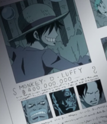
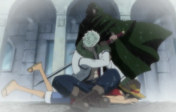
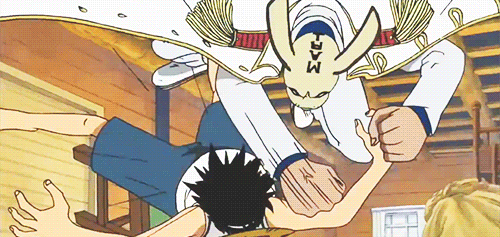
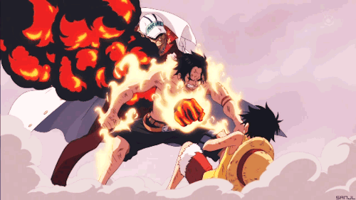
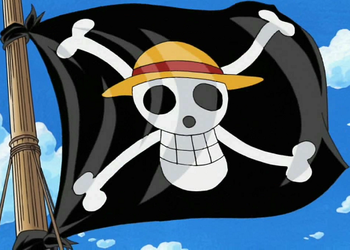
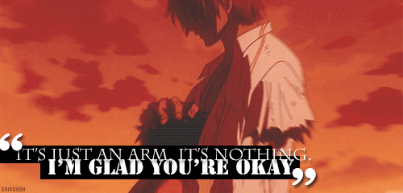
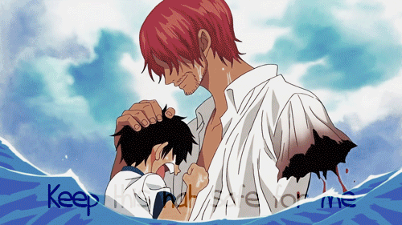
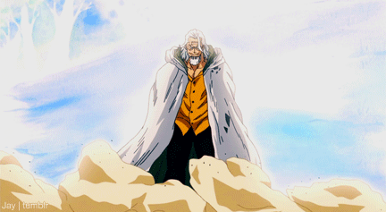

Luffy's known family members consists of some of the most powerful and infamous people in the world. His grandfather is a famous Marine hero and his father is the world's most wanted man. In his childhood, Luffy befriended two boys who became his sworn brothers.
Dragon is the infamous leader of the Revolutionary Army who has been attempting to overthrow the World Government. He is the World Government's greatest enemy, and is the most dangerous and most wanted man in the world.
Garp is a Marine vice admiral. He is the father of Monkey D. Dragon, the paternal grandfather of Monkey D. Luffy, and the adoptive grandfather of Portgas D. Ace. Garp is an eccentric but caring man, who is loyal to both his criminal family and the Marine Headquarters, who he has served for decades.
"Fire Fist" Ace, was the adopted older brother of Luffy and Sabo, and son of the late Pirate King, Gol D. Roger and his lover, Portgas D. Rouge. He was adopted by Monkey D. Garp as wished by Roger to him before his birth. Ace was the 2nd division commander of the Whitebeard Pirates and one-time captain of the Spade Pirates.
Because he is the captain and recruited all the crew mates personally, Luffy cares tremendously for his crew. As far as captaincy is concerned, Luffy sees his other crew mates as equals in contrast to other pirate captains, who mostly sees theirs as subordinate underlings. His crew mostly calls him by name, rather than with an honorific or "Captain".
Shanks is a compassionate man who leads his crew members with benevolence and is largely seen with respect from other captains. His selflessness is thus that he didn't even think twice when losing his arm defending a young Monkey D. Luffy from the Sea King.
Much like Shanks, Luffy is the kind of benevolent pirate captain who does not seek to actively harm others unless they give him and his crew (or anyone he cares about) a very good reason to.
Ever since Rayleigh had heard about Luffy from Shanks, he had wanted to meet him face to face. Rayleigh also mentored Luffy on how to master all three different forms of Haki. Luffy strongly respected Rayleigh as a teacher as he was even willing to endure hunger as punishment.
